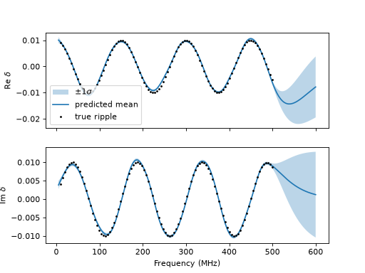

Discrepancy Prediction
A fitted Gaussian-process discrepancy can be predicted at new frequencies, with its uncertainty. Here we fit the S11 of a coaxial line and predict its discrepancy beyond the fit band.
Fitting with a Discrepancy
We add a slow ripple and measurement noise to the line’s S11, then fit the dielectric constant with a GaussianProcess for the discrepancy. The kernel length scale uses the fit frequency’s unit, MHz:
import numpy as np
import pmrf as prf
from pmrf.models import CoaxialLine
from pmrf.materials import BulkConductor, ConstantDielectric
from pmrf.fitting import fit
from pmrf.stats import GaussianLikelihood, GaussianProcess, Matern52Kernel
def coax(ep_r):
return CoaxialLine(
d_in=1.05e-3, d_out=3.2e-3,
dielectric=ConstantDielectric(ep_r=ep_r, tand=1e-3),
conductor=BulkConductor(sigma=1 / 1.7e-8),
length=10.0,
)
freq = prf.Frequency(10, 500, 100, 'MHz')
ripple = 0.01 * np.exp(2j * np.pi * freq.f_scaled / 150.0)
rng = np.random.default_rng(0)
noise = 1e-3 * (rng.normal(size=freq.npoints) + 1j * rng.normal(size=freq.npoints))
s11 = np.asarray(coax(1.40).s(freq)[:, 0, 0]) + ripple + noise
gp = GaussianProcess(
Matern52Kernel(prf.Bounded(10.0, 200.0, value=50.0)) * prf.Bounded(1e-5, 1e-3, value=1e-4)
)
result = fit(
coax(prf.Bounded(1.38, 1.42, value=1.39)), s11, frequency=freq, features='s11',
likelihood=GaussianLikelihood(prf.Bounded(1e-7, 1e-4, value=1e-6)),
discrepancy=gp,
)
Predicting the Discrepancy
predict_discrepancy() uses the fitted model and residuals to predict the discrepancy. The new frequency grid extends beyond the fit band and uses GHz; the method handles the unit conversion.
import matplotlib.pyplot as plt
(term,) = result.solution.objective
mll = term.evaluator.evaluator
new_freq = prf.Frequency(0.005, 0.6, 300, 'GHz')
delta = mll.predict_discrepancy(result.model, freq, new_freq)
mean = delta.mean()
std = np.sqrt(np.diagonal(delta.covariance(), axis1=-2, axis2=-1))
fig, axes = plt.subplots(2, 1, sharex=True)
for ax, m, s, r, part in zip(axes, mean, std, (ripple.real, ripple.imag), ('Re', 'Im')):
ax.fill_between(new_freq.f_scaled * 1e3, m - s, m + s, alpha=0.3, label=r'$\pm 1\sigma$')
ax.plot(new_freq.f_scaled * 1e3, m, label='predicted mean')
ax.plot(freq.f_scaled, r, 'k.', markersize=3, label='true ripple')
ax.set_ylabel(rf'{part} $\delta$')
axes[0].legend()
axes[1].set_xlabel('Frequency (MHz)')

The prediction has separate real and imaginary S11 blocks, with frequency last. It excludes measurement noise. Beyond the fit band, the mean approaches zero and uncertainty grows.